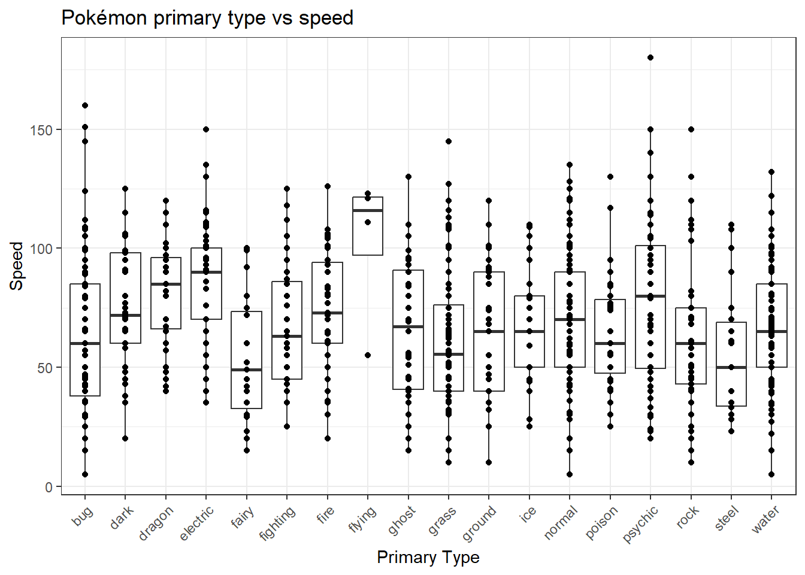
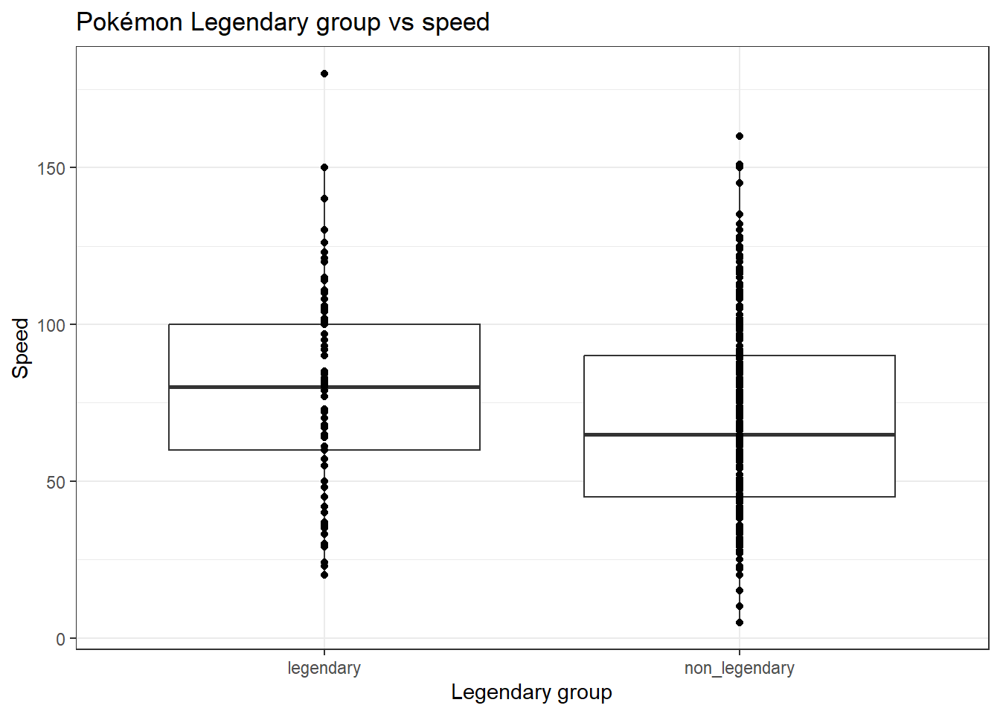
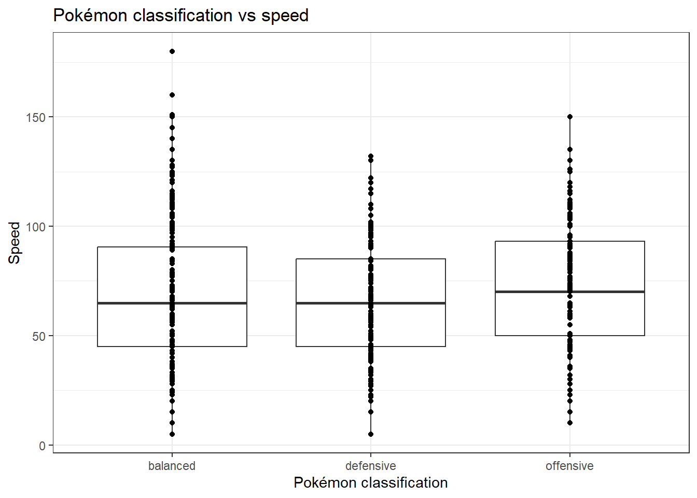
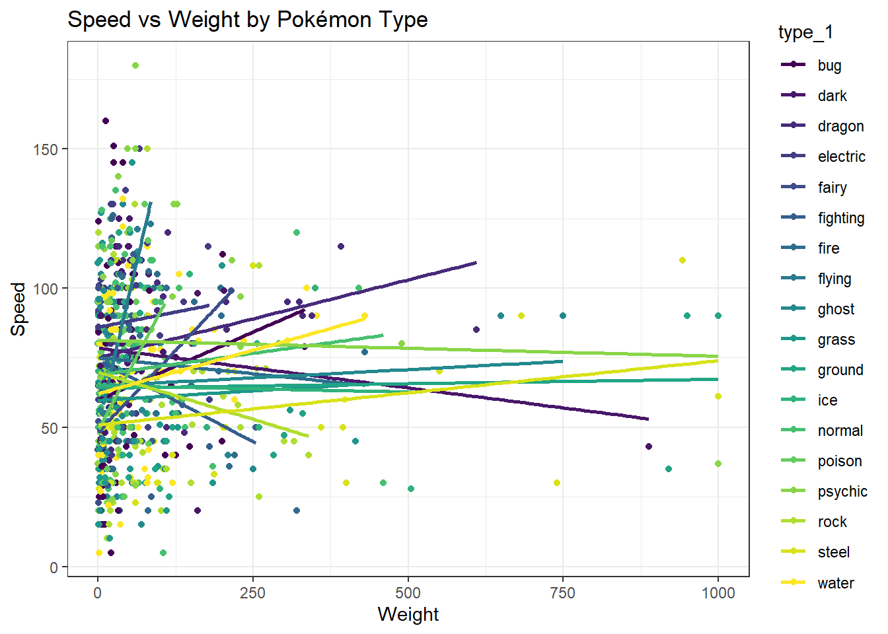
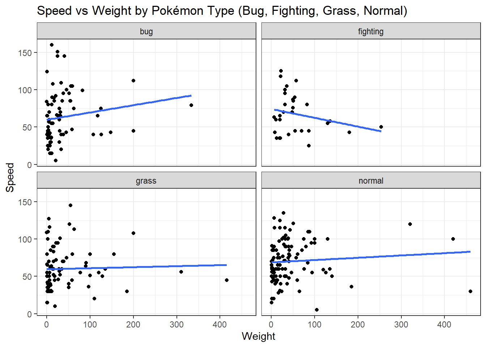

This study aims to explore how speed points vary depending on the Pokémon’s primary type (type_1), secondary type (type_2), and weight. The report is divided into two sections: (1) Speed points variation in association with Pokémon’s primary type, (2) Speed points variation in association with Pokémon’s both types after controlling for the weight. Each of the sections consists of the following items.
2 Speed Points Variation in Association with Pokémon Primary Type
2.1 Exploratory Data Analysis
Before doing any visualisation or hypothesis testing, I’d take a look at the data structure: what covariates are present, the number of Pokémon types, and missing values if any. This information will enable me to understand the Pokémon type distribution, whether they are balanced or not.
# 1. Count NAsna_type_1 <-sum(is.na(pokemon$type_1))print(paste("NAs count for type_1: ", na_type_1))
[1] "NAs count for type_1: 0"
# 2. See the breakdown of all levels (NA would appear separately if present)summary(pokemon$type_1)
bug dark dragon electric fairy fighting fire flying
79 37 39 61 19 31 59 4
ghost grass ground ice normal poison psychic rock
40 84 36 29 111 35 64 65
steel water
30 126
# 3. Proportion of NAsna_prop_type_1 <-mean(is.na(pokemon$type_1))print(paste("Proportion of NAs in type_1: ", na_prop_type_1))
[1] "Proportion of NAs in type_1: 0"
# Check the structurestr(pokemon$type_2)
Factor w/ 18 levels "bug","dark","dragon",..: 14 14 14 NA NA 8 NA NA NA NA ...
# 1. Count NAsna_type_2 <-sum(is.na(pokemon$type_2))print(paste("NAs count for type_2: ", na_type_2))
[1] "NAs count for type_2: 439"
# 2. See the breakdown of all levels (NA would appear separately if present)summary(pokemon$type_2)
bug dark dragon electric fairy fighting fire flying
5 25 22 12 39 33 15 121
ghost grass ground ice normal poison psychic rock
18 26 40 15 7 35 36 14
steel water NA's
29 18 439
# 3. Proportion of NAsna_prop_type_2 <-mean(is.na(pokemon$type_2))print(paste("Proportion of NAs in type_2: ", na_prop_type_2))
[1] "Proportion of NAs in type_2: 0.46259220231823"
A total of 18 Pokémon types are observed in the dataset, with no missing values in the type_1 covariate The distribution of Pokémon types is notably imbalanced. Among the 949 recorded Pokémon, only four are classified as Flying-type, whereas Water-type Pokémon account for as many as 126 observations.
On the other hand, there are also a total of 18 Pokémon types present in the type_2 with 439 missing values. However, I assume that NA here represents for that Pokémon instead of missing data. Furthermore, the distribution of the factors in the type_2 is also imbalanced with only five are Bug-type, but as many as 121 Pokémon are Flying-type.
In the next step, I plot speed points of 18 primary types (type_1) to see if there is any speed variation among existing types. The plot below displays speed variation according to the type, with dragon, electric, fairy, flying, grass, psychic, and steel noticeably stand out from the other types.
library(tidyverse)
ggplot(pokemon, aes(x = type_1, y = speed)) +geom_boxplot() +geom_point() +labs(title ="Pokémon primary type vs speed", x ="Primary Type", y ="Speed") +theme_bw() +theme(axis.text.x =element_text(angle =45, hjust =1))

The presence of outliers in several types, such as psychic, bug, electric, and rock, caught my attention. Further research into the Pokémon community shows that there is another category of Pokémon called . However, this is not an official category, such as those in type_1 and type_2, but they are spread across every type. Legendary Pokémon are powerful and have higher power stats compared to the normal ones (https://bulbapedia.bulbagarden.net/wiki/Legendary_Pok%C3%A9mon). Hence, I suspect that Pokémon types with a high number of Legendary Pokémon, affect the type’s speed average.
To affirm the theory, the Pokémons are classified into two new categories (the new classification is named legendary_group): (1) primary types with a high number of Legendary Pokémon (called ): psychic, dragon, flying, and fire (https://thelostlambda.github.io/pokestats/); (2) primary types with a low number of Legendary Pokémon (called ): consists of other types not yet mentioned. As seen in the plot below, . Later on, this will be tested with ANOVA to see if either of the two levels’ speed is different from the overall average speed.
# Create a binary grouping variablepokemon$legendary_group <-ifelse(pokemon$type_1 %in%c("psychic", "dragon", "flying", "fire"), "legendary", "non_legendary")pokemon$legendary_group <-as.factor(pokemon$legendary_group)ggplot(pokemon, aes(x = legendary_group, y = speed)) +geom_boxplot() +geom_point() +labs(title ="Pokémon Legendary group vs speed", x ="Legendary group", y ="Speed") +theme_bw()

Furthermore, Pokémon stats distribution is closely related to its combat style, which is divided into three classes based on the Pokémon community: offensive, defensive, and balanced (https://www.reddit.com/r/TruePokemon/comments/fimlpi/offensive_vs_defensive_typings/). To investigate how speed points vary in association to the Pokémon’s combat style, Pokémons are classified into three levels: (1) offensive, covering fighting, ground, fire, ice, electric, and rock types; (2) defensive, covering steel, fairy, water, dragon, ghost, and poison; (3) balanced, covering normal, flying, psychic, dark, grass, and bug.
Pokémon classification vs speed plot shows that both balanced and defensive Pokémon have the same average speed, while offensive ones have a higher average speed. This signals that offensive-typed Pokémon has average speed that is different from the overall average speed. Further ANOVA test will be used to verify this hypothesis.
# Visualisation of speed vs combat styleggplot(pokemon, aes(x = type_classification, y = speed)) +geom_boxplot() +geom_point() +labs(title ="Pokémon classification vs speed", x ="Pokémon classification", y ="Speed") +theme_bw()

2.2 ANOVA Test
2.2.1 Testing if any type in type_1 is different from the overall average speed
Firstly, I employ ANOVA test to evaluate the significance of regression model of speed against type_1 using centered parametrisation approach (lm(formula = speed ~ type_1)):
\(H_0: \beta_1 = ... = \beta_{18} = 0\)
\(H_1: \text{at least one of } \beta_1, ..., \beta_{18} \text{ is not 0}\)
library(standardize)
# Set sum-to-zero contrasts on type_1contrasts(pokemon$type_1) <-named_contr_sum(levels(pokemon$type_1))# Fit the modelfit_speed_stz <-lm(speed ~ type_1, data = pokemon)# Get summarysummary(fit_speed_stz)
fit_null <-lm(speed ~1, data = pokemon)anova(fit_null, fit_speed_stz)
Analysis of Variance Table
Model 1: speed ~ 1
Model 2: speed ~ type_1
Res.Df RSS Df Sum of Sq F Pr(>F)
1 948 808815
2 931 740094 17 68721 5.0851 9.783e-11 ***
---
Signif. codes: 0 '***' 0.001 '**' 0.01 '*' 0.05 '.' 0.1 ' ' 1
Based on the one-way ANOVA test, \(H_0\) is rejected (p-value = 9.783e-11), and . Furthermore, as indicated in Pokémon primary type vs speed plot, the graph indicates that at least dragon, electric, fairy, flying, grass, psychic, and steel have different average speeds compared to the overall average. A closer look at the regression summary (using sum to zero approach) in the regerssion summary above, demonstrating that .
2.2.2 Testing if any of the types with high and low numbers of legendary Pokémon are different from the overall average speed
Further ANOVA test to evaluate the significance of regression model of speed against the legendary_group with the formula lm(formula = speed ~ legendary_group) using centered parametrisation approach:
\(H_0: \beta_1 = \beta_2 = 0\)
\(H_1: \text{at least one of } \beta_1, \beta_2 \text{ is not equal 0}\)
contrasts(pokemon$legendary_group) <-named_contr_sum(levels(pokemon$legendary_group)) # Set sum-to-zero contrasts on type_1fit_legendary <-lm(speed ~ legendary_group, data = pokemon) # Fit model comparing the two groupssummary(fit_legendary)
Call:
lm(formula = speed ~ legendary_group, data = pokemon)
Residuals:
Min 1Q Median 3Q Max
-61.853 -21.853 -1.853 20.741 100.741
Coefficients:
Estimate Std. Error t value Pr(>|t|)
(Intercept) 73.056 1.232 59.289 < 2e-16 ***
legendary_grouplegendary 6.203 1.232 5.034 5.75e-07 ***
---
Signif. codes: 0 '***' 0.001 '**' 0.01 '*' 0.05 '.' 0.1 ' ' 1
Residual standard error: 28.84 on 947 degrees of freedom
Multiple R-squared: 0.02606, Adjusted R-squared: 0.02503
F-statistic: 25.34 on 1 and 947 DF, p-value: 5.748e-07
fit_null <-lm(speed ~1, data = pokemon)anova(fit_null, fit_legendary) # ANOVA test to check if there is legendary group that is different from the overall average speed
Analysis of Variance Table
Model 1: speed ~ 1
Model 2: speed ~ legendary_group
Res.Df RSS Df Sum of Sq F Pr(>F)
1 948 808815
2 947 787736 1 21080 25.341 5.748e-07 ***
---
Signif. codes: 0 '***' 0.001 '**' 0.01 '*' 0.05 '.' 0.1 ' ' 1
The ANOVA test produces p-value of 5.748e-07 (\(<\) 0.05). Hence, \(H_0\) is rejected, and it is concluded that at least one of the legendary_group is statistically significant in predicting the speed points. Furthermore, the regression summary above shows that the estimated coefficients of both legendary and non_legendary levels are significant with a p-value of 5.75e-07 (\(<\) 0.05), meaning that .
2.2.3 Testing if any of the offensive, defensive, and balanced Pokémon types are different from the overall average speed
ANOVA test is employed to test the significance of the regression model for speed points against the Pokémon’s combat style lm(formula = speed ~ type_classification) using centered parametrisation approach:
\(H_0: \beta_1 = ... = \beta_{3} = 0\)
\(H_1: \text{at least one of } \beta_1, ..., \beta_{3} \text{ is not 0}\)
# Set sum-to-zero contrasts on type_1contrasts(pokemon$type_classification) <-named_contr_sum(levels(pokemon$type_classification))# Fit model comparing the two groupsfit_classification <-lm(speed ~ type_classification, data = pokemon)summary(fit_classification)
Call:
lm(formula = speed ~ type_classification, data = pokemon)
Residuals:
Min 1Q Median 3Q Max
-64.375 -23.375 -1.616 20.625 110.625
Coefficients:
Estimate Std. Error t value Pr(>|t|)
(Intercept) 69.0106 0.9552 72.250 <2e-16 ***
type_classificationbalanced 0.3641 1.2885 0.283 0.7776
type_classificationdefensive -2.9691 1.3759 -2.158 0.0312 *
---
Signif. codes: 0 '***' 0.001 '**' 0.01 '*' 0.05 '.' 0.1 ' ' 1
Residual standard error: 29.16 on 946 degrees of freedom
Multiple R-squared: 0.00557, Adjusted R-squared: 0.003467
F-statistic: 2.649 on 2 and 946 DF, p-value: 0.07124
fit_null <-lm(speed ~1, data = pokemon)anova(fit_null, fit_classification)
Analysis of Variance Table
Model 1: speed ~ 1
Model 2: speed ~ type_classification
Res.Df RSS Df Sum of Sq F Pr(>F)
1 948 808815
2 946 804311 2 4504.7 2.6491 0.07124 .
---
Signif. codes: 0 '***' 0.001 '**' 0.01 '*' 0.05 '.' 0.1 ' ' 1
Based on one-way ANOVA test, the model fails to reject \(H_0\) (p-value = 0.07124 \(>\) 0.05), and it is concluded that the model is not statistically significant. However, the regression summary shows that the defensive type showed a statistically significant difference from the grand mean (refer to the regression summary table above), with a mean speed approximately 2.9691 points lower (p = 0.0312 \(<\) 0.05). Hence, despite this individual significance, the model explains very little variance in speed (\(R^2\) = 0.0056), and the overall factor was marginally insignificant.
3 Speed points variation in association with Pokémon’s both types after controlling for the weight
3.1 Exploratory Data Analysis
ggplot(pokemon, aes(x = weight, y = speed, group = type_1, color = type_1)) +scale_color_viridis_d() +geom_point() +geom_smooth(method ="lm", se =FALSE) +labs(title ="Speed vs Weight by Pokémon Type", x ="Weight", y ="Speed") +theme_bw()

Speed vs Weight by Pokémon Type plot shows that the relationship between speed points and weight differs considerably depending on the primary type, signalling the importance of the interaction term between weight and type_1 in the regression model later.
3.2 ANCOVA Test
As it is assumed that the NA values in the type_2 predictor represents for that Pokémon instead of missing data, I first recode NA to and treat it as another level for Pokémon without a secondary type.
For the ANCOVA test on speed points variation with both Pokémon type after controlling for their weight, the regression model being tested is lm(speed ~ weight + type_1 + type_2_clean), where type_2_clean is the pre-processed type_2 column. I use centered parametrisation for type_1 and referenced parametrisation for type_2:
\(H_0: \beta_2 = ... = \beta_{37} = 0\)
\(H_1: \text{at least one of } \beta_2, ..., \beta_{37} \text{ is not 0}\)
pokemon$type_2_clean <- pokemon$type_2pokemon$type_2_clean <-as.character(pokemon$type_2_clean) # Converting to characterpokemon$type_2_clean[is.na(pokemon$type_2_clean)] <-"None"# Replacing NA with "None"pokemon$type_2_clean <-factor(pokemon$type_2_clean) # Converting to factorfit_null <-lm(speed ~ weight, data = pokemon) # Fitting model with only weight as the predictorsummary(fit_null)
Call:
lm(formula = speed ~ weight, data = pokemon)
Residuals:
Min 1Q Median 3Q Max
-64.338 -23.538 -3.502 21.466 111.021
Coefficients:
Estimate Std. Error t value Pr(>|t|)
(Intercept) 68.485731 1.083139 63.229 <2e-16 ***
weight 0.008117 0.007909 1.026 0.305
---
Signif. codes: 0 '***' 0.001 '**' 0.01 '*' 0.05 '.' 0.1 ' ' 1
Residual standard error: 29.21 on 947 degrees of freedom
Multiple R-squared: 0.001111, Adjusted R-squared: 5.634e-05
F-statistic: 1.053 on 1 and 947 DF, p-value: 0.305
fit_ancova <-lm(speed ~ weight + type_1 + type_2_clean, data = pokemon) # Fitting model with weight, type_1, and type_2_clean as the predictorssummary(fit_ancova)
anova(fit_null, fit_ancova) # Test whether type_1 and type_2 have effect on speed after controlling for the weight
Analysis of Variance Table
Model 1: speed ~ weight
Model 2: speed ~ weight + type_1 + type_2_clean
Res.Df RSS Df Sum of Sq F Pr(>F)
1 947 807917
2 912 656371 35 151546 6.0162 < 2.2e-16 ***
---
Signif. codes: 0 '***' 0.001 '**' 0.01 '*' 0.05 '.' 0.1 ' ' 1
The ANCOVA test gives a p-value of < 2.2e-16. Hence, \(H_0\) is rejected, and it is concluded that speed points vary with both Pokemon type after controlling for their weight (or both Pokemon types are statistically significant in predicting speed points after controlling for their weight).
Another ANCOVA test is employed to check whether there is any difference in the relationship between speed and weight depending on the primary type. The regression model being tested here is lm(formula = speed ~ weight * type_1 + type_2_clean), using centered parametrisation for type_1 and referenced parametrisation for type_2:
\(H_0: \beta_2 = ... = \beta_{55} = 0\)
\(H_1: \text{at least one of } \beta_2, ..., \beta_{55} \text{ is not 0}\)
fit_interaction <-lm(speed ~ weight * type_1 + type_2_clean, data = pokemon) # Fitting a model with weight-type_1 interaction termsummary(fit_interaction)
anova(fit_ancova, fit_interaction) # Test the significance of weight-type_1 interaction term
Analysis of Variance Table
Model 1: speed ~ weight + type_1 + type_2_clean
Model 2: speed ~ weight * type_1 + type_2_clean
Res.Df RSS Df Sum of Sq F Pr(>F)
1 912 656371
2 895 637904 17 18467 1.5241 0.07904 .
---
Signif. codes: 0 '***' 0.001 '**' 0.01 '*' 0.05 '.' 0.1 ' ' 1
The ANCOVA test gives a p-value of 0.07904 (> 0.05). Hence, \(H_0\) is accepted, and it is concluded that the relationship between speed and weight does not differ depending on the primary type. However, this ANCOVA test result is contradictory to the interpretation of Speed vs Weight by Pokémon Type plot. A closer look at the speed-weight data of each type reveals that high leverage points are present in the dataset (Speed vs Weight by Pokémon Type (Bug, Fighting, Grass, Normal) plot), creating regression lines that can’t be interpreted as such without any statistical test.
selected_types <-subset(pokemon, type_1 %in%c("bug", "fighting", "grass", "normal"))ggplot(selected_types, aes(x = weight, y = speed)) +geom_point() +geom_smooth(method ="lm", se =FALSE) +labs(title ="Speed vs Weight by Pokémon Type (Bug, Fighting, Grass, Normal)", x ="Weight", y ="Speed") +theme_bw() +facet_wrap(~type_1, ncol =2)

4 Conclusion
ANOVA test on the regression model of speed points against type_1 shows that the primary type of Pokémon is statistically significant in predicting the speed. Furthermore, the regression reveals that bug, dragon, electric, fairy, flying, grass, psychic, and steel types are statistically different from the overall speed.
By constructing linear combinations of the \(\mu_i\)’s, we’re able to see the effect of the number of legendary Pokémon on the speed points and the effect of the Pokémon’s combat style on the speed points. The ANOVA test on the first case shows that the model is statistically significant. Additionally, both legendary and non_legendary levels’ speed average differ from the overall average based on the regression model.
On the other hand, the ANOVA test on the latter case shows that the model is not statistically significant. However, the regression model demonstrates that defensive-type Pokémon’s average speed differs significantly from the overall average speed, while balanced and offensive types do not.
The ANCOVA test on speed variation with both Pokémon types after controlling for their weight concludes that the model without the interaction term between the primary type and weight is statistically significant.
5 Disclaimer
This report has been partially submitted as a part of STAT8130 Generalised Linear Modelling course in Semester 1 2026 in obtaining a degree in Master’s of Applied Data Analytics.